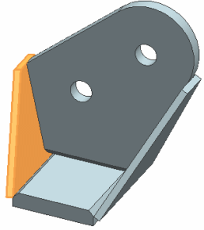

Examine the assembly
The model is a simple bracket composed of four solid bodies. The bodies are welded together during manufacturing. For the analysis, assume that they are one body.
 Assembly Navigator
Assembly Navigator
-
 wb_001
wb_001
-
Select each of the other components.
Note the locations of the components in the assembly.